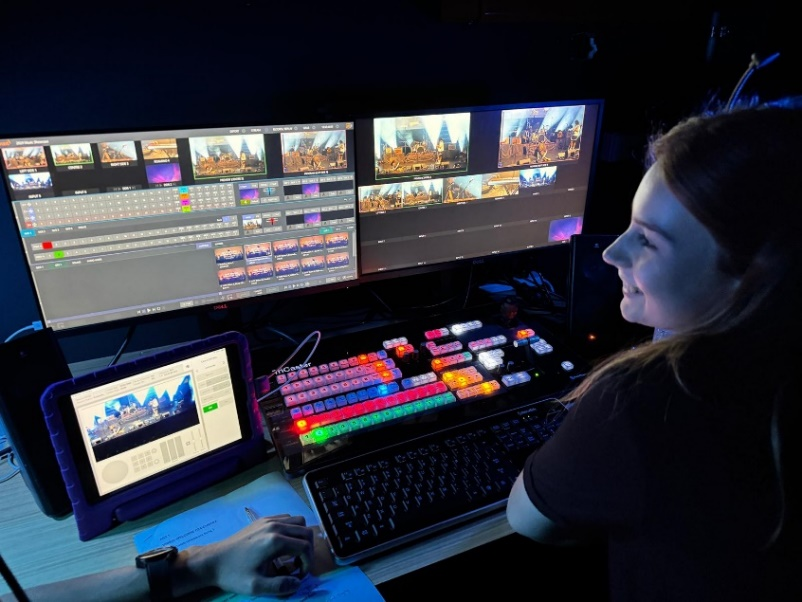

I am a Meanjin (Brisbane) based vision technician and emerging designer with hands-on experience across all technical fields. I've worked on events ranging from student theatre to large-scale festivals, both independently and as part of diverse teams. Specialising in vision, I work as an LED screen technician, camera and PTZ operator and vision switcher, and I'm increasingly designing vision systems and content for theatre. I also bring practical experience in lighting, audio and backline, and I'm committed to growing into a versatile designer and technician.
Other credits: Summersalt Festival, Luminous Festival, Toowoomba Carnival of Flowers, Iris Van Herpen GOMA exhibition opening, GOPIO India Day Fair, Caloundra Music Festival.
Worked with the festival's lighting designer to implement lighting, communicating with artists, festival production and crew. Vision switcher and PTZ operator for Electron.
Worked with the director and creative team to design the vision system and content for QUT Acting's production of Incognito.
Collaborated with the writer/director and other creatives to create the visuals for the play Winging It.
Working in a team, communicating between team members and clients, working under pressure and time constraints, problem-solving and error checking, managing hazards, delegating tasks and managing people.